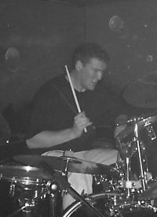

 Jon H.
Jon was the last original member to join the SabbraCadabra line up. Like his idols Bill Ward and John Bonham of LedZeppelin, Jon was a hard drum hitter whilst holding the band ina tight formation. Jon mixed the crashing rolls and thudding bass linesperfectly with the often subtle jazzy beats that Bill Ward was wont touse. Jon had worked with a number of bands in the Weymouth area andadmits that his main interest with SabbraCadabra is the challenge. His musical influences included Led Zeppelin, The Cult,Faith No More, Primus, Soundgarden, AC/DC, Iron Maiden, and of course Sabbath themselves.Something of a practical joker, Jon enjoyednothing better than to wind up the others, however, the less said about'dolphins' the better!!!! Unfortunately Jon, moved on from drums to guitar and has continued his musical aspirations that way.